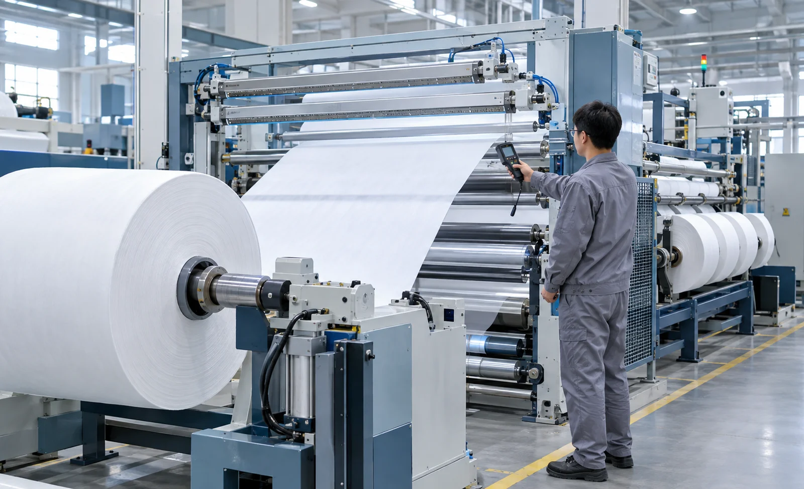
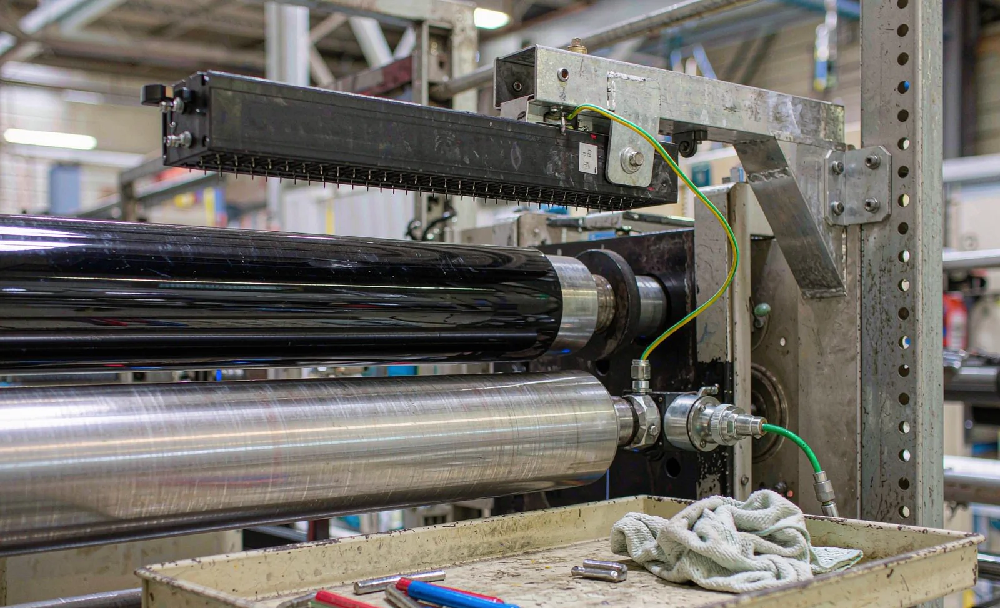

Published October 17, 2026 | By HDPTH Technical Editorial Team

Every converting line is an electrostatic generator. Contact and separation — web leaving the unwind roll, wrapping rollers, peeling off the knife — transfer electrons between surfaces, and the faster and drier the process, the more charge accumulates. Nonwovens are particularly difficult: the fibre structure is bulky, insulating and constantly shedding, so the web charges quickly and attracts its own trim back. At speed a film web can carry tens of kilovolts before the rewind. Because the charge is invisible and its effects surface hours later as winding complaints, buyers rarely write static requirements into the specification. This guide covers the causes, the cost, the controls and the acceptance test.
What uncontrolled static costs winding quality
The classic symptoms are easy to recognize once you know the signature. Charged web clings to rollers, so threading takes longer and manual pulling stretches the material. Layers in the wound roll attract each other, which winds hard against the core, hides tension errors and produces telescoping on later unwinding. Loose fibres, trim and dust are drawn onto the web and wound in, creating defects the inspection system blames on the web supplier. In the worst cases, discharge sparks near the rewind ignite solvent vapours or dust clouds — a safety issue covered separately in our ATEX explosion protection guide. Each symptom is routinely misdiagnosed as a tension, blade or material problem, so the first diagnostic step should be a field meter, not a toolbox.
Ionizing equipment: bars, blowers and placement
Active neutralization is the workhorse control. Ionizing bars produce balanced positive and negative ions that flood the web surface and collapse the charge; powered bars with sharpened emitters dominate the market. Placement matters more than brand. Charge peaks where the web separates and where it approaches a roll, so place bars at the unwind roll exit, after the slitting section, at the nip before the rewind core, and at the entry to any accumulated path or dancer loop. A bar works only within its rated distance — typically 30 to 100 millimetres from the web — and must never fire at a grounded roller at that distance, because it discharges against metal instead of the web. Emitter pins contaminated by nonwoven fibre lose most of their output while the cabinet LED still shows green, so ask vendors for ion balance data and cleaning access.
Grounding, bonding and machine design
Ionizers remove charge from the web; grounding removes it from everything else. Every conductive component — frame, rollers, shafts, knife holders, guards, ducting — must be bonded to a verified earth. Painted roller surfaces, nylon bearing isolators and rubber-covered nip rolls interrupt that path, so ask how each is handled — conductive coatings, grounded shaft ends, or slip brushes where rolling contact is the only route to earth. A roller running on a charged web can float at several kilovolts itself, re-charging every wrap that touches it. On the site walk, a resistance check from metal points to the earth bar — a few ohms is normal, kilohms are a finding — reveals broken bonds. Our reference on static control on slitter rewinders covers the grounding walkthrough in more detail for existing lines.

Humidity as an engineering control
Moisture films on hygroscopic surfaces bleed charge away, so higher relative humidity reduces charge on paper, cellulose-based nonwovens and many natural-fibre webs. Below roughly 40 percent RH the effect collapses; above 55 to 60 percent most cellulose webs behave measurably better. The limits are equally real: hydrophobic films such as PE, PP, PET and PTFE absorb almost no moisture and barely respond, and excessive humidity brings condensation, corrosion and dimensional change. Treat humidity as a supporting measure — our humidity and climate control guide explains the HVAC side — and require the machine itself to meet static limits at the dry end of your climate range. A supplier who only guarantees static performance at 60 percent RH has not guaranteed anything for January.
Static acceptance criteria: what to write into the contract
Static performance is testable only if the method is written down first. A robust acceptance clause contains four elements. First, the instrument: a calibrated field meter with stated measuring distance. Second, the positions: unwind exit, slitting section, rewind nip and the threading position, at production speed on your own material. Third, the limit: ±1 to ±2 kilovolts residual is a realistic target for a well-equipped line, with spark-risk positions held far lower. Fourth, the evidence: meter model, calibration certificate, readings and machine state recorded in the FAT report. The table below summarizes a package you can lift into your specification.
| Verification item | Method | Typical criterion |
|---|---|---|
| Residual web charge, defined positions | Field meter at stated distance, production speed | ±1 to ±2 kV surface potential |
| Ionizer ion balance and output | Charged-plate verification at each bar | Balance within vendor spec |
| Grounding integrity | Resistance from metal points to the earth bar | Low single-digit ohms, documented per point |
| Emitter condition and access | Cleaning or replacement without dismounting | Service interval documented for your dust load |
| Winding outcome correlation | Winding trial with static system on vs off | No charge-attributable telescoping, blocking or fibre pickup |
Static control never acts alone: it interacts with tension, nip load and roll structure, so read the results with the winding evidence. Pair the static measurements with the roll trials in our roll hardness testing guide, and review the complete package when specifying production-critical equipment such as HDPTH high-speed slitting machines, where ionization points, bonded roller design and meter-based acceptance are engineered into the build, not retrofitted later.
Specifying your next slitter rewinder?
Tell HDPTH your material, width and speed. We design static control — ionizer positions, bonded roller paths and field-meter acceptance — into the machine from the first layout, and hand over the measurement records with the build file.
Submit Your Project InquiryFrequently asked questions
Where should ionizing bars be placed on a slitter rewinder?
Charge peaks where the web separates, so place bars at the unwind roll exit, after the slitting section, at the nip before the rewind core, and at the entry to any accumulated path. Keep bars within their rated working distance, typically 30 to 100 millimetres from the web, and never facing a grounded roller.
Can we control static with humidity alone?
No. Raising relative humidity to roughly 55 percent and above reduces charge on many cellulose-based nonwovens, but hydrophobic films such as PE, PP, PET and PTFE barely respond because they absorb almost no moisture. Humidity is a supporting measure; every film line still needs active ionization and verified grounding as the primary controls.
What static level is acceptable at machine acceptance?
A practical criterion is residual surface potential of ±1 to ±2 kilovolts, measured with a calibrated field meter at defined positions at production speed on your material. Specify meter type, calibration status, distance, positions, material and machine state in the FAT protocol so the result can be repeated at site acceptance.
Do ionizing bars need maintenance, and how much?
Yes. Emitter pins collect dust and fibre, and a contaminated pin loses most of its neutralizing effect while still consuming power. Specify bars whose emitters can be cleaned or replaced without dismounting, ask for a cleaning interval for your dust load, and prefer bars with an integrated fault signal.
Why do our finished rolls cling to the core and telescope after slitting?
That is the classic static signature. Charged layers attract each other, so the web wraps tight against the core and itself; on the next unwind the layers resist separation and loosely wound wraps telescope. Verify the charge with a field meter at the rewind nip, then restore grounding, ionizer performance and, where the material allows, humidity.
Sources
- ESDA: Electrostatic Discharge Association — electrostatic measurement and standards resources
- AIMCAL: web handling and converting education, static and winding tracks
- Simco-Ion: static eliminator selection, ion balance and placement guides
- TAPPI: converting quality, roll structure and plant environment resources